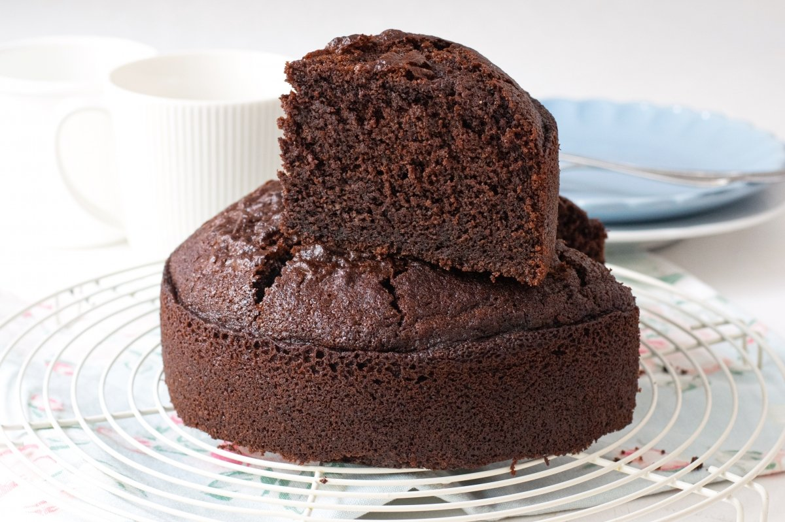

Tarta de Chocolate
Tiempo de preparación: 60 minutos
Categoría: Postre
Ingredientes:
- 200g de chocolate negro
- 200g de mantequilla
- 200g de azúcar
- 4 huevos
- 150g de harina
- 1 cucharadita de levadura
Pasos de preparación:
- Precalentar el horno a 180°C.
- Derretir el chocolate y la mantequilla al baño maría.
- Batir los huevos con el azúcar hasta que la mezcla blanquee.
- Añadir la mezcla de chocolate derretido y mezclar bien.
- Incorporar la harina y la levadura tamizadas.
- Verter la mezcla en un molde y hornear durante 25-30 minutos.
- Dejar enfriar antes de desmoldar y servir.